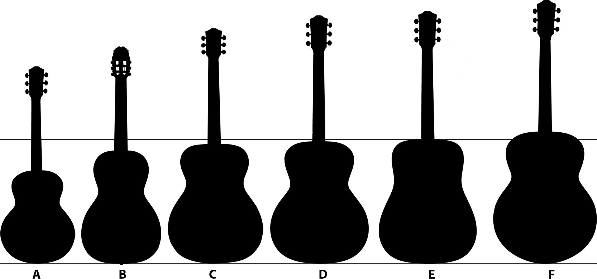

An acoustic guitar is a guitar that produces sound acoustically by transmitting
the vibration of the strings to the air—rather than depending on electronic intensification (see electric guitar).
The sound waves from the strings of an acoustic guitar resound through the guitar's body, making sound.
This ordinarily includes the utilization of a sound board and a sound box to reinforce the vibrations of the strings.
In standard tuning the guitar's six strings are tuned (low to high) E2 A2 D3 G3 B3 E4.
The principle wellspring of sound in an acoustic guitar is the string, which is culled or strummed with the finger or with a pick.
The string vibrates at a vital recurrence and furthermore makes numerous music at different distinctive frequencies.
The frequencies created can rely upon string length, mass, and strain.
The string makes the soundboard and sound box vibrate, and as these have their very own resonances at specific frequencies,
they enhance some string music more emphatically than others, consequently influencing the timbre delivered by the instrument.
the vibration of the strings to the air—rather than depending on electronic intensification (see electric guitar).
The sound waves from the strings of an acoustic guitar resound through the guitar's body, making sound.
This ordinarily includes the utilization of a sound board and a sound box to reinforce the vibrations of the strings.
In standard tuning the guitar's six strings are tuned (low to high) E2 A2 D3 G3 B3 E4.
The principle wellspring of sound in an acoustic guitar is the string, which is culled or strummed with the finger or with a pick.
The string vibrates at a vital recurrence and furthermore makes numerous music at different distinctive frequencies.
The frequencies created can rely upon string length, mass, and strain.
The string makes the soundboard and sound box vibrate, and as these have their very own resonances at specific frequencies,
they enhance some string music more emphatically than others, consequently influencing the timbre delivered by the instrument.

HISTORY
The guitar is an antiquated instrument, whose history can be followed back more than 4000 years. Numerous hypotheses have been progressed about the instrument's family line, yet the cutting edge acoustic guitar originates from a long advancement of stringed melodic instruments.
It has regularly been guaranteed that the guitar is an improvement of the medieval instrument Vihuela as development of old Lute.
Gitterns, (little, culled guitars) were the principal little, guitar-like instruments made amid the Spanish Middle Ages with a round back, similar to that of the lute.[1] Modern guitar-formed instruments were not seen until the Renaissance period, when the body and size started to take a guitar-like shape.
The soonest string instruments that identified with the guitar and its structure where comprehensively known as the vihuelas inside Spanish melodic culture. Vihuelas were string instruments that were ordinarily found in the sixteenth century amid the Renaissance. Afterward, Spanish scholars recognized these instruments into two classifications of vihuelas.
The vihuela de arco was an instrument that impersonated the violin, and the vihuela de penola was played with a plectrum or by hand. When it was played by hand it was known as the vihuela de mano. Vihuela de mano imparted outrageous likenesses to the Renaissance guitar as it utilized hand development at the sound gap or sound bore of the instrument to make music.
By 1790 just six-course vihuela guitars (six harmony tuned sets of strings) were being made and had turned into the fundamental kind and model of guitar utilized in Spain. The vast majority of the more established 5-course guitars were still being used but on the other hand were being adjusted to a six-coursed acoustical guitar.
Fernando Ferandiere's book Arte de tocar la guitarra espanola por musica (Madrid, 1799) portrays the standard Spanish guitar from his time as an instrument with seventeen frets and six courses with the initial two 'gut' strings tuned as one called the terceras and the tuning named to 'G' of the two strings.
The acoustic guitar right now started to take the shape commonplace in the advanced acoustic guitar. The coursed sets of strings in the end turned out to be less normal for single strings. At long last, around 1850, the structure and structure of the advanced Guitar is credited to Spanish guitar creator Antonio Torres Jurado, who expanded the extent of the guitar body, modified its extents, and imagined the leap forward fan-supported example.
Propping, which alludes to the inward example of wood fortifications used to verify the guitar's best and back to keep the instrument from falling under pressure, is an essential factor in how the guitar sounds.
Torres' plan enormously improved the volume, tone, and projection of the instrument, and it has remained basically unaltered since.
It has regularly been guaranteed that the guitar is an improvement of the medieval instrument Vihuela as development of old Lute.
Gitterns, (little, culled guitars) were the principal little, guitar-like instruments made amid the Spanish Middle Ages with a round back, similar to that of the lute.[1] Modern guitar-formed instruments were not seen until the Renaissance period, when the body and size started to take a guitar-like shape.
The soonest string instruments that identified with the guitar and its structure where comprehensively known as the vihuelas inside Spanish melodic culture. Vihuelas were string instruments that were ordinarily found in the sixteenth century amid the Renaissance. Afterward, Spanish scholars recognized these instruments into two classifications of vihuelas.
The vihuela de arco was an instrument that impersonated the violin, and the vihuela de penola was played with a plectrum or by hand. When it was played by hand it was known as the vihuela de mano. Vihuela de mano imparted outrageous likenesses to the Renaissance guitar as it utilized hand development at the sound gap or sound bore of the instrument to make music.
By 1790 just six-course vihuela guitars (six harmony tuned sets of strings) were being made and had turned into the fundamental kind and model of guitar utilized in Spain. The vast majority of the more established 5-course guitars were still being used but on the other hand were being adjusted to a six-coursed acoustical guitar.
Fernando Ferandiere's book Arte de tocar la guitarra espanola por musica (Madrid, 1799) portrays the standard Spanish guitar from his time as an instrument with seventeen frets and six courses with the initial two 'gut' strings tuned as one called the terceras and the tuning named to 'G' of the two strings.
The acoustic guitar right now started to take the shape commonplace in the advanced acoustic guitar. The coursed sets of strings in the end turned out to be less normal for single strings. At long last, around 1850, the structure and structure of the advanced Guitar is credited to Spanish guitar creator Antonio Torres Jurado, who expanded the extent of the guitar body, modified its extents, and imagined the leap forward fan-supported example.
Propping, which alludes to the inward example of wood fortifications used to verify the guitar's best and back to keep the instrument from falling under pressure, is an essential factor in how the guitar sounds.
Torres' plan enormously improved the volume, tone, and projection of the instrument, and it has remained basically unaltered since.
Amplification
An acoustic guitar can be intensified by utilizing different sorts of pickups or receivers. Notwithstanding, intensification of acoustic guitars had numerous issues with sound criticism. During the 1960s, Ovation's allegorical dishes drastically decreased criticism, permitting more prominent enhancement of acoustic guitars.In the 1970s, Ovation created more slender sound-sheets with carbon-based composites overlaying a dainty layer of birch, in its Adamas display, which has been seen as a standout amongst the most extreme structures ever of guitars. The Adamas demonstrate disseminated the sound-opening of the conventional soundboard among 22 little solid gaps in the upper bore of the guitar, yielding more noteworthy volume and further decreasing input amid enhancement. Another strategy for lessening criticism is to fit an elastic or plastic circle into the sound gap.
The most widely recognized kind of pickups utilized for acoustic guitar enhancement are piezo and attractive pickups. Piezo pickups are for the most part mounted under the scaffold seat of the acoustic guitar and can be connected to a blender or intensifier. A Piezo pickup made by Baldwin was fused in the assemblage of Ovation guitars, instead of joined by boring through the body; the blend of the Piezo pickup and allegorical ("roundback") body helped Ovation prevail in the market amid the 1970s.
Attractive pickups on acoustic guitars are commonly mounted in the sound opening, and are like those in electric guitars. An acoustic guitar with pickups for electrical enhancement is called an acoustic-electric guitar.
During the 2000s, makers acquainted new sorts of pickups with attempt to intensify the full stable of these instruments. This incorporates body sensors, and frameworks that incorporate an inward mouthpiece alongside body sensors or under-the-saddle pickups.
How guitars is made????
Body shape
Basic body shapes for present day acoustic guitars, from littlest to biggest: Range – The littlest basic body shape, here and there called a small scale enormous, is seventy five percent the extent of a gigantic molded guitar. A range shape normally has an adjusted back to improve projection for the littler body. The littler body and scale length make the range guitar a possibility for players who battle with bigger body guitars.Parlor – Parlor guitars have little reduced bodies and have been portrayed as "punchy" sounding with a fragile tone. The littler body makes the parlor a progressively agreeable choice for players who discover substantial body guitars awkward.
Fantastic Concert – This medium sized body shape isn't as profound as other full-estimate guitars, however has a full midsection. In view of the littler body, fantastic show guitars have an increasingly controlled suggestion and are frequently utilized for its sound projection when recording.
Assembly hall – Similar in measurements to the man of war body shape, yet with a significantly more articulated midsection. The moving of the midriff gives distinctive tones to emerge. The amphitheater body shape is a more current body when contrasted with alternate shapes, for example, man of war.
Man of war – This is the great guitar body shape. The style was planned by Martin Guitars to deliver a more profound sound than "exemplary"- style guitars, with full bass. Utilized for more than 100 years, it is as yet the most well known body style for acoustic guitars. The body is substantial and the midriff of the guitar isn't as articulated as the assembly hall and amazing show bodies. This enables mid-go frequencies to emerge, helping the guitar slice through a gathering of instruments.
Kind sized – The biggest standard guitar body shape found on acoustic guitars. The expansive body gives more punch and volume, while complementing the "boomy" low end of the guitar. Enormous is greater than a Grand Auditorium yet likewise proportioned, and is commonly intended to give a profound tone like a dreadnought's. It was planned by Gibson to rival the man of war, yet with most extreme resounding space for more prominent volume and continue. These come to the detriment of being larger than average, with a profound sounding box, and consequently to some degree progressively hard to play.[citation needed] The principal case of the style is the Gibson J-200, however like the man of war, most guitar makers have something like one kind sized model.

Common guitar body shapes:
A. Range B. Parlor C. Grand Concert D. Auditorium E. Dreadnought F. Jumbo
he acoustic guitar's soundboard, or top, also has a strong effect on the loudness of the guitar. Woods that actually are good at transmitting sound, like spruce, are commonly used for the soundboard.[5] No amplification actually occurs in this process, because musician add no external energy to increase the loudness of the sound (as would be the case with an electronic amplifier). All the energy is provided by the plucking of the string. Without a soundboard, however, the string would just "cut" through the air without actually moving it much. The soundboard increases the surface of the vibrating area in a process called mechanical impedance matching. The soundboard can move the air much more easily than the string alone, because it is large and flat. This increases the entire system's energy transfer efficiency, and musicians emit a much louder sound.
What's more, the acoustic guitar has an empty body, and an extra coupling and reverberation impact builds the effectiveness of vitality transmission in lower frequencies. The air in a guitar's pit reverberates with the vibration methods of the string and soundboard. At low frequencies, which rely upon the span of the container, the chamber demonstrations like a Helmholtz resonator, expanding or diminishing the volume of the sound again relying upon whether the air in the case moves in eliminate or of stage with the strings. At the point when in stage, the sound increments by around 3 decibels. In contradicting stage, it diminishes around 3 decibels. As a Helmholtz resonator, the air at the opening is vibrating in or out of stage with the air in the crate and in or out of stage with the strings. These reverberation associations lessen or enhance the sound at various frequencies, boosting or damping different symphonious tones. At last, the hole air vibrations couple to the outside air through the sound opening, however a few variations of the acoustic guitar preclude this gap, or have f gaps, similar to a violin family instrument . This coupling is most effective in light of the fact that here the impedance coordinating is immaculate: it is air pushing air.
A guitar has a few sound coupling modes: string to soundboard, soundboard to depression air, and both soundboard and pit air to outside air. The back of the guitar likewise vibrates somewhat, determined via air in the hole and mechanical coupling to whatever remains of the guitar. The guitar—as an acoustic framework—hues the sound by the manner in which it produces and stresses music, and how it couples this vitality to the encompassing air. Improved coupling, be that as it may, comes costing rot time, since the string's vitality is all the more proficiently transmitted. Strong body electric guitars produce exceptionally low volume, yet will in general have long support. All these unpredictable air coupling cooperations, and the full properties of the boards themselves, are a key reason that distinctive guitars have diverse tonal characteristics. The sound is a perplexing blend of music that give the guitar its particular sound.
What's more, the acoustic guitar has an empty body, and an extra coupling and reverberation impact builds the effectiveness of vitality transmission in lower frequencies. The air in a guitar's pit reverberates with the vibration methods of the string and soundboard. At low frequencies, which rely upon the span of the container, the chamber demonstrations like a Helmholtz resonator, expanding or diminishing the volume of the sound again relying upon whether the air in the case moves in eliminate or of stage with the strings. At the point when in stage, the sound increments by around 3 decibels. In contradicting stage, it diminishes around 3 decibels. As a Helmholtz resonator, the air at the opening is vibrating in or out of stage with the air in the crate and in or out of stage with the strings. These reverberation associations lessen or enhance the sound at various frequencies, boosting or damping different symphonious tones. At last, the hole air vibrations couple to the outside air through the sound opening, however a few variations of the acoustic guitar preclude this gap, or have f gaps, similar to a violin family instrument . This coupling is most effective in light of the fact that here the impedance coordinating is immaculate: it is air pushing air.
A guitar has a few sound coupling modes: string to soundboard, soundboard to depression air, and both soundboard and pit air to outside air. The back of the guitar likewise vibrates somewhat, determined via air in the hole and mechanical coupling to whatever remains of the guitar. The guitar—as an acoustic framework—hues the sound by the manner in which it produces and stresses music, and how it couples this vitality to the encompassing air. Improved coupling, be that as it may, comes costing rot time, since the string's vitality is all the more proficiently transmitted. Strong body electric guitars produce exceptionally low volume, yet will in general have long support. All these unpredictable air coupling cooperations, and the full properties of the boards themselves, are a key reason that distinctive guitars have diverse tonal characteristics. The sound is a perplexing blend of music that give the guitar its particular sound.